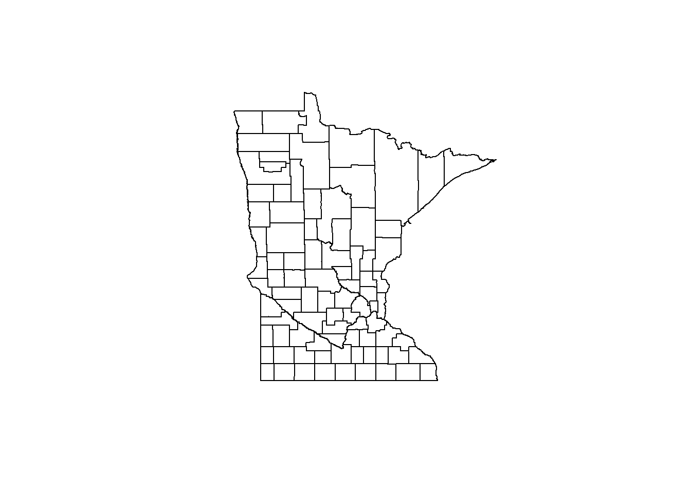

Getting data
This section describes how to access air monitoring and modeling data. These data include:
Air monitoring
- EPA
- MPCA
Health and standards
- Air toxics
- 2.2.1 Inhalation health benchmarks
- Criteria pollutants
- 2.2.2 Air Quality Standards (NAAQs and MAAQS)
Air modeling
Context
- Emissions
- Meteorology and Climate
- Geography and Census data
2.1 Air monitoring
2.1.1 Retrieving data from AQS
The Air Quality System (AQS) contains ambient air pollution data collected by EPA, state, local, and tribal air pollution control agencies from over thousands of monitors. AQS also contains meteorological data, descriptive information about each monitoring station (including its geographic location and its operator), and data quality assurance/quality control information.
Registered users can access the AQS database via a web application at https://www.epa.gov/aqs.
2.1.2 Retrieving data from AQS DataMart
The AQS Data Mart provides a convenient API to access air quality data stored in the EPA’s AQS database, [AQS Data Mart] (https://aqs.epa.gov/aqsweb/documents/data_mart_welcome.html)
Note: The AQS Data Mart requires a user name and password.The username and password is not the same as your AQS User Account.To request a Data Mart account, follow the instructions on the Data Mart page.
The RQAMD package allows users to query the AQS Data Mart in R, [RQAMD] (https://github.com/ebailey78/raqdm)
Sample R script
Click the button below to view a step by step example.
##install raqdm package
library(devtools)
devtools::install_github("ebailey78/raqdm")
library(raqdm)
##set Data Mart username and password.
setAQDMuser("User Name","PW",save=TRUE) #Note save=TRUE creates a file that stores username and password locally, you will not need to run setuser info each time you load raqdm.
setAQDMdefaults(pc="CRITERIA", state="27", save=TRUE) #Set defaults that are locally stored for queries. This eliminates need to define the data type and state code.
##Single Paramteer Query
x <- getAQDMdata(state="27",pc="CRITERIA",param="42602",format="AQCSV",bdate="20140101",edate="20141231",synchronous = FALSE) # Queries Data Mart DataBase
aqcsv <- getAQDMrequest(x) # Wait for email confirming file is ready.
##Multiple Parameter Loops
params <- c("45201", "42602", "44201") #Create a vector with the parameters you are interested in
# Use lapply to loop through the params vector, requesting each one from AQDM. A list of requests will be returned to the x variable
x <- lapply(params, function(p) {
return(getAQDMdata(param=p))
})
# now loop through the requests to retrieve the data
y <- lapply(x, function(r) {
return(getAQDMrequest(r))
})
# You could then use do.call and rbind to combine them into one data.frame
d <- do.call(rbind, y)2.1.3 Current AQI observations
Air data for the entire United States is at your finger tips. EPA’s AirNow maintains a publicly accessible folder of current air monitoring data at https://files.airnowtech.org/. Data retrieved from AirNow is preliminary and may change following QA.
Sample R script
Use the following R code to grab the most recent AQI results for the entire country.
library(dplyr)
library(readr)
# Connect to AirNow data site
#https://files.airnowtech.org/
airnow_link <- paste0("https://s3-us-west-1.amazonaws.com//files.airnowtech.org/airnow/today/",
"HourlyData_",
format(Sys.time() - 60*75, "%Y%m%d%H", tz = "GMT"),
".dat")
aqi_now <- read_delim(airnow_link, "|",
col_names = F)
#col_types = c('cccciccdc'))
# Add column names
names(aqi_now) <- c("date", "time", "aqsid", "city", "local_time", "parameter", "units", "concentration", "agency")
# Filter to Ozone and PM2.5 results
aqi_now <- filter(aqi_now, parameter %in% c("OZONE", "PM2.5"))2.1.4 Active AQI monitors
Current air monitoring locations are published on AirNow to the monitoring_site_locations.dat file.
Sample R script
Click the button below to view a step by step example.
library(dplyr)
library(readr)
# Connect to AirNow data site
#https://files.airnowtech.org/
airnow_link <- paste0("https://s3-us-west-1.amazonaws.com//files.airnowtech.org/airnow/today/",
"monitoring_site_locations.dat")
aqi_sites <- read_delim(airnow_link, "|", col_names = F)
# Drop empty columns
aqi_sites <- aqi_sites[ , -c(14:16,22:23)]
# Add column names
names(aqi_sites) <- c("aqsid",
"parameter",
"local_id",
"name",
"status",
"state_region",
"agency",
"epa_region",
"lat",
"long",
"elevation",
"local_time",
"country",
"city",
"state_fips",
"state",
"county_fips",
"county")
# Filter to Minnesota sites
aqi_sites <- filter(aqi_sites, state_fips %in% c(27))2.1.5 Retrieving data from LIMS via Tableau
The LIMS database is the primary data warehouse for AQ monitoring activities. The LIMS system is being retired and replaced. To ease data accessibilty during this transition LIMS data are available for download via an internal Tableau workbook at http://tableau.pca.state.mn.us/#/workbooks/3342.
2.1.6 Retrieving continuous data from AirVision
AirVision is the data acquistion and temporary storage database for continuous air monitoring data. Data collected in AirVision is transfered to LIMs and AQS for final data storage. If you need to access to continuous data before it has been transfered to the final data repository you can run reports from AirVision.
To run reports, the AirVision client must be installed on your computer and you need an user account. Contact the Air Monitoring Supervisor to request credentials. Alternatively, an AirVision administator can create a report task that will generate a data report and send it to a specified location (FTP site or e-mail).
2.1.7 Retrieving data from MPCA WAIR database
The WAIR database provides a queryable local copy of select air quality data extracted from multiple data sources. This database is managed by Margaret McCourtney. Contact Margaret to request login credentials.
See WAIR Data Dictionary for available data tables.
Use the following code to query WAIR using the R package dplyr.
################################################################################################
## This script loads the library and driver and connects to WAIR. A dplyr query extracts
## data from the database into a format specified by Cassie McMahon for calculating
## OZONE DESIGN VALUES
##
## Note: WAIR does not contain values for SamplingFrequency and MonitorProtocolID
##
## Note: dplyr does not have a command to disconnect from the database. Connection will
## terminate upon quitting R. Please do not keep (many) connections open for long periods of
## time.
################################################################################################
## Load the package
library(dplyr)
## Open a connection to the database WAIR, schema AQS ##
my_wair <- src_postgres(dbname = 'wair', host = "eiger", user = "username", password = "password",
options = "-c search_path=aqs")
## Reference a table, or two if combining, in the database (e.g. aqs.monitor & aqs.obs_value) ##
## Select columns and filter by row ##
#aqs.monitor table in WAIR ##
my_monitor <- tbl(my_wair, "monitor") %>%
select(id_mon:poc_code) %>%
filter(stateid==27 && parm_code == 44201)
#aqs.obs_value table in WAIR ##
my_obs <- tbl(my_wair, "obs_value") %>%
filter(parm_code == 44201 && between(sampldate, "2014-06-01", "2014-06-07")) %>%
select(id_mon, dur_code, unitid, method_code,
sampldate, startime, value, nulldata, qual_code)
## Combine monitor data with observations
my_mn_o3 <- inner_join(my_monitor, my_obs, type = "inner", by = c("id_mon"))
## Collect data into a dataframe or table
my_mn_o3_df <- collect(my_mn_o3) %>%
arrange(stateid, cntyid, siteid, parm_code, # Arrange combined data in specified order
poc_code, dur_code, unitid, method_code,
sampldate, startime, value, nulldata, qual_code)
##
head(my_mn_o3_df)Use the following code to query WAIR using the package RPostgrSQL.
################################################################################################
## This script loads the library and driver and connects to WAIR. A PostgrSQL query extracts
## data from the database into a format specified by Cassie McMahon for calculating
## OZONE DESIGN VALUES
##
## Please disconnect from database and unload the driver before proceeding with analysis of
## the data in your dataframe.
##
## Cassie's headings
## "State.Code", "County.Code", "Site.ID", "Parameter", "POC", "Sample.Duration", "Unit",
## "Method", "Date", "Start.Time", "Sample.Value", "NullDataCode", "SamplingFrequency",
## "MonitorProtocolID", "Qual1"
## Note: WAIR does not contain values for SamplingFrequency and MonitorProtocolID
##
################################################################################################
## call the library
library(RPostgreSQL)
## load the PostgreSQL driver
drv <- dbDriver("PostgreSQL")
## Open a connection
con <- dbConnect(drv, dbname = "wair", host = 'eiger', user = 'username', password = 'password')
#***************************** all in 1 step ***************************************************
dframe <- dbGetQuery(con,
statement = paste(
################ insert SQL here ######################
"SELECT m.stateid AS state_code,\
m.cntyid AS county_code,\
m.siteid AS site_id,\
m.parm_code AS parameter,\
m.poc_code AS poc,\
o.dur_code AS sample_duration,\
o.unitid AS unit,\
o.method_code AS method,\
o.sampldate AS date,\
o.startime AS start_time,\
o.value AS sample_value,\
o.nulldata AS nulldatacode,\
NULL AS sampling_frequency,\
NULL AS monitor_protocol_id,\
o.qual_code\
FROM aqs.monitor m \
JOIN aqs.obs_value o \
ON m.id_mon = o.id_mon \
WHERE m.stateid = '27' \
AND m.parm_code = '44201' \
AND o.sampldate BETWEEN '2014-06-01' AND '2014-06-07'\
"
########################################################
));
#***********************************************************************************************
## Closes the connection
dbDisconnect(con)
## Frees all the resources on the driver
dbUnloadDriver(drv)2.2 Health and standards
2.2.1 Inhalation health benchmarks
The inhalation health benchmarks used by MPCA are available on the web in these formats:
- PDF: https://www.pca.state.mn.us/sites/default/files/aq9-28.pdf
- Excel: https://www.pca.state.mn.us/sites/default/files/aq9-22.xlsm
- CSV: https://raw.githubusercontent.com/MPCA-air/health-values/master/Inhalation_Health_Benchmarks(IHBs).csv
Use the following R code to grab the most recent inhalation health benchmarks and references used by MPCA.
library(readxl)
rass_web <- read_excel("X:/Agency_Files/Outcomes/Risk_Eval_Air_Mod/_Air_Risk_Evaluation/AERA program/RASS/AERA RASS (aq9-22-7)_2018-01.xlsx",
sheet = "ToxValues",
skip = 19)
ihbs <- rass_web[ , c("Surrogate?", "Group", "CAS # or MPCA#", "Chemical Name", "HAP?", "Tox Value Source", "Acute Air Conc. (ug/m3)", "General Toxic Endpoint", "Specific Toxic Endpoint", "Notes", "Surrogate CAS", "Surrogate Name", "Tox Value Source__1", "Unit Risk (ug/m3)-1", "10-5 Cancer-based Air Conc (ug/m3)", "Notes__1", "Surrogate CAS__1", "Surrogate Name__1", "Tox Value Source__2", "Reference Conc. (ug/m3)", "General Toxic Endpoint__1", "Specific Toxic Endpoint__1", "Notes__2", "Surrogate CAS__2", "Surrogate Name__2")]
names(ihbs) <- c("Surrogate", "Group", "CAS", "Chemical Name", "is_HAP", "Acute Source", "Acute Air Conc", "Acute Toxic Endpoint", "Acute Specific Endpoint", "Acute Notes", "Acute Surrogate CAS", "Acute Surrogate Name", "Cancer Tox Value Source", "Unit Risk", "Cancer-based Air Conc", "Cancer Notes", "Cancer Surrogate CAS", "Cancer Surrogate Name", "NC Tox Value Source", "Reference Conc", "NC Toxic Endpoint", "NC Specific Toxic Endpoint", "Chronic Notes", "Chronic Surrogate CAS", "Chronic Surrogate Name")You can also pull a simple table of inhalation health benchmarks from a table on Github.
library(readr)
url <- "https://raw.githubusercontent.com/MPCA-air/health-values/master/Inhalation_Health_Benchmarks(IHBs).csv"
ihbs <- read_csv(url) 2.2.2 Air Quality Standards (NAAQs and MAAQS)
Criteria air pollutants including: particulate (TSP, PM10, PM2.5), ozone, lead, sulfur dioxide, nitrogen dioxide, and carbon monoxide are regulated via ambient air quality standards. Ambient air quality standards are set at the national (NAAQS) and state (MAAQS) level.
NAAQS
The Clean Air Act, which was last amended in 1990, requires EPA to set National Ambient Air Quality Standards (40 CFR part 50) for pollutants considered harmful to public health and the environment. The Clean Air Act identifies two types of national ambient air quality standards. Primary standards provide public health protection, including protecting the health of “sensitive” populations such as asthmatics, children, and the elderly. Secondary standards provide public welfare protection, including protection against decreased visibility and damage to animals, crops, vegetation, and buildings.
- A summary of current NAAQS is available on EPA’s website:
- When calculating NAAQS design values, analysts must follow the procedures defined in the pollutant specific appendices to 40 CFR 50.
- In August each year, EPA posts official design values here:
- https://www.epa.gov/air-trends/air-quality-design-values
MAAQS
Minnesota Ambient Air Quality Standards (MAAQS) are established in Minnesota Administrative Rules 7009.
In most cases, the MAAQS are the same as the NAAQS. The MAAQS also include standards for two pollutants that are not covered by the NAAQS: TSP and hydrogen sulfide. The MAAQS were last updated in January 2017.
When calculating MAAQS design values:
- If MAAQS = NAAQS, use methods described in appendices to 40 CFR 50.
- If MAAQS = revoked NAAQS, use methods described in archived appendices to 40 CFR 50.
- For MAAQS without a NAAQS, such as H2S, use the “Form of the standard” language to guide your calculations.
2.3 Air modeling
2.3.1 NATA modeling
The National Air Toxics Assessment is a nationwide air modeling effort to provide air concentrations and risks for all U.S. census tracts. These results may be pulled from a map project or data tables at this website: https://www.epa.gov/national-air-toxics-assessment.
After each inventory is completed the Minnesota statewide cumulative air pollution model is compared to these results.
2.3.2 MNRISKS statewide risk modeling
MNRISKS is the statewide cumulative air pollution model that is produced by MPCA every three years with the air toxics emissions inventory publication. The model itself produces point estimates for air concentrations and potential human health risks for hundreds of air pollutants across Minnesota. The model also incorporates a date and transport component that produces multi-pathway risk results. Census block group averaged results are available on the MPCA webpage in the following location: https://www.pca.state.mn.us/air/air-modeling-and-human-health.
2.3.3 Downscaler modeling results for Ozone and PM2.5
Downscaled data (a blend of modeling and monitoring results) are provided by the CDC in cooperation with the EPA for the pollutants ozone and PM-2.5. Daily predicitons are available for each Census tract throughout the country for the years 2001 to 2013.
- CDC information about this platform is available online at https://ephtracking.cdc.gov/showAirData.action
- Data from this platform can be downloaded from the EPA at https://www.epa.gov/air-research/downscaler-model-predicting-daily-air-pollution.
- Downloaded data filtered to Minnesota results is available internally in the data folder:
X:\Programs\Air_Quality_Programs\Air Monitoring Data and Risks\6 Air Data\EPA Downscaler Modeling.
2.3.4 CMAQ Ozone modeling
The Community Multiscale Air Quality Modeling System (CMAQ) is defined by EPA as:
CMAQ (see-mak): an active open-source development project of the EPA that consists of a suite of programs for conducting air quality model simulations. CMAQ combines current knowledge in atmospheric science and air quality modeling, and an open-source framework to deliver fast, technically sound estimates of ozone, particulates, air toxics and acids deposition.
The information and data from this platform can be found at the following website https://www.epa.gov/cmaq.
2.4 Context
2.4.1 MN Emissions Inventory
Every year all facilities (stationary point sources) report criteria pollutant emissions and every three years facilities report air toxics emissions. The EPA and the state of Minnesota emissions inventory team also calculate and report emissions for all other types of emissions sources such as mobile, non-road mobile, and area sources. These non-point emissions are reported every three years with the air toxics emissions. The Minnesota emission inventory is the foundation of MNRISKS. These emissions levels are reported in several data tools on the MPCA website. Their data and the visualization tools can be found on the following website https://www.pca.state.mn.us/air/emissions-data.
2.4.2 EPA’s NEI
The National Emissions Inventory (NEI) provides air toxics and criteria and air toxic pollutant emissions for the entire U.S. on the same schedule as described in the Minnesota Emissions Inventory section. This information can be found at the following website https://www.epa.gov/air-emissions-inventories/national-emissions-inventory-nei.
2.4.3 Facility locations
The most recent compilation of facility coordinates was performed for the 2017 emission inventory. This data is available in the INV_SOURCES table found in the RAPIDS schema within MPCA’s DELTA database.
Use the following code to load the current facility coordinates.
# This script connects to the MPCA database DELTA.
# A dplyr query collects source coordinates from the RAPIDS schema.
# Load packages
library(dplyr)
library(RODBC)
library(readr)You can view available database connections in R using the function odbcDataSources().
odbcDataSources()## Excel Files
## "Microsoft Excel Driver (*.xls, *.xlsx, *.xlsm, *.xlsb)"
## MS Access Database
## "Microsoft Access Driver (*.mdb, *.accdb)"
## dBASE Files
## "Microsoft Access dBASE Driver (*.dbf, *.ndx, *.mdx)"
## LakesXMLDataSource
## "CR ODBC XML Driver 4.20"
## LIMS32
## "Microsoft ODBC for Oracle"
## delta
## "Oracle in OraClient11g_home2"
## delta2
## "Microsoft ODBC for Oracle"
## rapids
## "Oracle in OraClient11g_home2"
## PostgreSQL35W
## "PostgreSQL Unicode(x64)"
## weather
## "MySQL ODBC 5.3 ANSI Driver"
## deltaw
## "Oracle in OraClient11g_home2"
## mnrisk
## "Firebird/InterBase(r) driver"To connect to deltaw, use the function odbcConnect().
# Load credentials
credentials <- read_csv("X:/Agency_Files/Outcomes/Risk_Eval_Air_Mod/_Air_Risk_Evaluation/R/R_Camp/Student Folder/credentials.csv")
user <- credentials$delta_user
password <- credentials$delta_pwd
# Alternatively, use your own
#user <- "ta*******"
#password <- "da**_*******"
# Connect to DELTA
deltaw <- odbcConnect("deltaw",
uid = user,
pwd = password,
believeNRows = FALSE)
# Show all tables in RAPIDS schema
rapids_tbls <- sqlTables(deltaw, tableType = "TABLE", schema = "RAPIDS")
head(rapids_tbls)## TABLE_CAT TABLE_SCHEM TABLE_NAME TABLE_TYPE REMARKS
## 1 <NA> RAPIDS GEO_ACTIVITIES TABLE <NA>
## 2 <NA> RAPIDS GEO_COUNTIES TABLE <NA>
## 3 <NA> RAPIDS GEO_NATIONS TABLE <NA>
## 4 <NA> RAPIDS GEO_REGIONS TABLE <NA>
## 5 <NA> RAPIDS GEO_REGION_MEMBERS TABLE <NA>
## 6 <NA> RAPIDS GEO_STATES TABLE <NA># Get inventory year codes
inv_codes <- sqlQuery(deltaw, "SELECT * FROM RAPIDS.INV_INVENTORIES", max = 100, stringsAsFactors = F)
# Get code for 2017
inv_id <- filter(inv_codes, INVENTORY_YEAR == 2017)$RID
# Get sources for inventory year
sources <- sqlQuery(deltaw, paste0("SELECT * FROM RAPIDS.INV_SOURCES WHERE INVENTORY_RID = ", inv_id),
max = 10000,
stringsAsFactors = F,
as.is = T)
# Get source coordinates
src_coords <- sqlQuery(deltaw, "SELECT * FROM RAPIDS.INV_COORDINATES",
max = 100000,
stringsAsFactors = F,
as.is = T)
# Join coordinates to sources
sources <- left_join(sources, src_coords, by = c("RID" = "ENTITY_RID"))
# View data
sources %>% select(SOURCE_ID, SOURCE_TYPE, SOURCE_NAME, LONGITUDE, LATITUDE) %>% glimpse()## Observations: 2,189
## Variables: 5
## $ SOURCE_ID <chr> "2705300965", "2704100003", "2712300491", "2716300...
## $ SOURCE_TYPE <chr> "POINT", "POINT", "POINT", "POINT", "POINT", "POIN...
## $ SOURCE_NAME <chr> "133rd Airlift Wing - Minnesota Air National Guard...
## $ LONGITUDE <chr> "-93.20204163", "-95.37827467", "-93.07428353", "-...
## $ LATITUDE <chr> "44.89044571", "45.86819022", "44.94358342", "44.7...2.4.4 Weather observations
Historical meteorological observations are available from multiple sources. These data may come in a raw unprocessd format or be pre-cleaned and quality controlled for machine errors.
An internal Tableau workbook provides raw results for Minnesota meteorological stations: tableau.pca.state.mn.us/#/workbooks/5714.
The AQI forecast uses a web API provided by DarkSky for current forecast information and quality assurred historical observations.
2.4.5 HYSPLIT wind trajectories
Wind trajectories are useful for determining the primary sources contributing to elevated monitoring results. Trajectory results for the air monitoring netowork are available in WAIR for the years 2007 to 2017. The R package SplitR was used to run the HYSPLIT model for each air monitor.
Use the following code to query WAIR for HYSPLIT results.
# This script connects to the MPCA database WAIR.
# A dplyr query collects HYSPLIT modeling results for Anoka Airport.
# Load packages
library(dplyr)
# Open a connection to the database WAIR, schema hys ##
my_wair <- src_postgres(dbname = 'wair', host = "eiger", user = "username", password = "password")
# Show tables
src_tbls(my_wair) %>% sort()
# Connect to hys.backtrajectory table ##
hys <- tbl(my_wair, "hys.backtrajectory")
hys <- tbl(my_wair, sql('hys.backtrajectory'))
# Collect data for Anoka Airport after year 2010 ##
hys_mpls <- hys %>%
select(-the_geom) %>%
filter(site_catid == "27-003-1002", yr > 10) %>%
collect(n = 2000)
# View data
head(hys_mpls)2.4.6 Land use maps
Land use shapefiles are maintained by MPCA GIS technical staff and stored on the agency R-drive at R:\landuse_landcover.
2.4.7 United States Census boundaries
Census boundaries can be loaded into R for mapping air data to Census tracts and block groups.
Use the following code to download and map MN boundaries.
# This script downloads shapefiles of Minnesota
## Counties
## Census tracts
## Census Block groups
# Load packages
library(tigris)
# Load boundaries
county_bnds <- counties(state = "MN", cb = T)
tract_bnds <- tracts(state = "MN", cb = T)
bg_bnds <- block_groups(state = "MN", cb = T)
# Plot
plot(county_bnds)
2.4.8 American Community Survey (ACS)
The ACS provides updated demographic statistics used for population estimates and Environmental Justice indicators.
Use the following code to download Minnesota ACS results.
# This script downloads American Community Survey (ACS) results for MN
# Load packages
library(tidycensus)
# ACS data requires a Census key
# Visit: http://api.census.gov/data/key_signup.html
census_api_key("Your_API_key")
# View all ACS variables
acs_variables <- load_variables(2015, "acs5", cache = TRUE)
# Download 5-yr population estimates for 2015
pops_2015 <- get_acs(geography = "tract",
state = "MN",
variables = "B01003_001",
survey = "acs5",
year = 2015)
# Download decennial population estimates for 2010
pops_2010 <- get_decennial(geography = "tract",
state = "MN",
variables = "P0080001",
year = 2010)
# Download household median income for 2015
med_inc_2015 <- get_acs(geography = "tract",
state = "MN",
variables = "B19013_001",
survey = "acs5",
year = 2015)